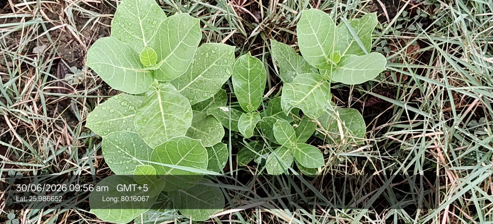

Also known as: Aak / Madar / Milkweed / Crown Flower

Scientific name
Calotropis procera
Family
Apocynaceae
Category
Shrubs
Habitat & Growing Conditions
Native to North Africa, West Asia, and the Indian subcontinent. Very common throughout India
Found widely in UP including Kanpur area in your coordinates. Grows on wastelands, roadsides, railway tracks, and degraded soils
Thrives in hot, dry, arid to semi-arid climate. Extremely drought and heat tolerant. Survives 10-45°C
Needs full sun. Grows in poor, sandy, rocky, saline, and alkaline soils where other plants fail. pH 6.0-9.0
Does not tolerate waterlogging. Flowers and fruits almost year-round
Economic Importance
Pioneer species for wasteland reclamation. Host plant for butterflies like Monarch and Plain Tiger
Biofuel: Seeds contain oil that can be used for biodiesel
Medicinal Importance
Major use in Ayurveda, Siddha, and folk medicine. Latex, leaves, root bark used for skin diseases, wounds, asthma, fever, and pain. Contains cardiac glycosides. Note: Plant is toxic. Consult a healthcare professional before any medicinal use. Do not use without expert guidance
Fiber: Seed floss is silky and used for stuffing pillows, mattresses, and life jackets. Called "Indian kapok". Fiber from stem used for ropes
Pesticide/Insecticide: Latex has insecticidal and nematicidal properties. Used in organic farming
Religious: Flowers are offered to Lord Shiva and Lord Hanuman. Very important in Hindu rituals
Fodder: Camels and goats eat young leaves in drought conditions, but can be toxic in large quantities